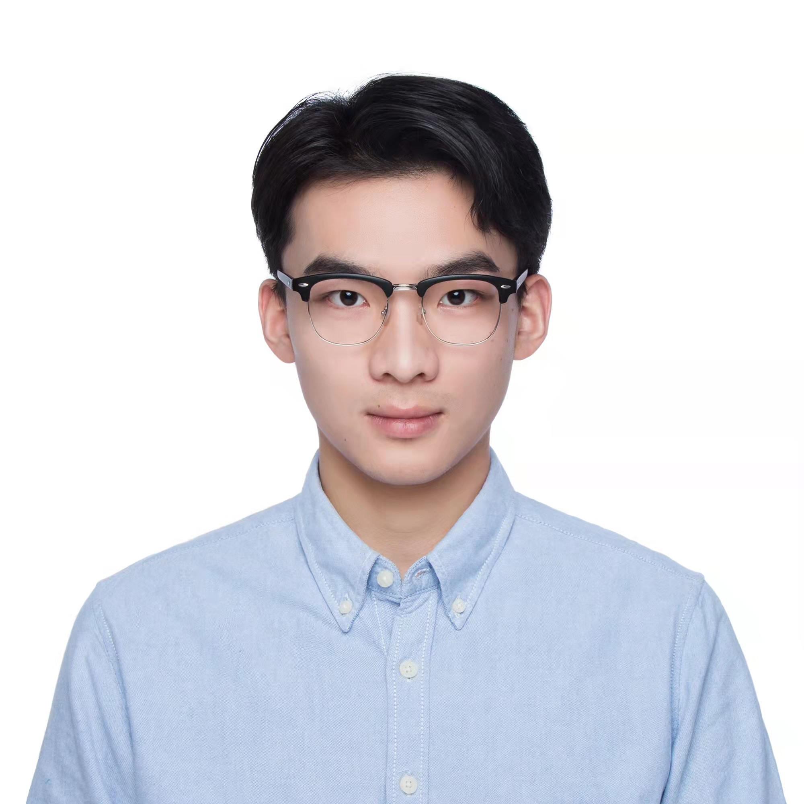

Yuhao WuPh.D. Student
Sydney AI Centre
Address: J12/ 1 Cleveland St, Darlington, NSW 2008, Australia
|
 |
Biography
Hi, I'm Yuhao Wu! Currently a PhD student at the University of Sydney, where I am fortunately advised by Prof. Tongliang Liu. Before I embark on my PhD journay, I received my Master degree in Data Science from the same institution.
I have a broad research interests in Trustworthy AI, including machine learning robustness, fairness and privacy issues, as well as the related problems in real-world applications, such as images, graph data and text data. Besides, I have a growing research interest in studying the trustworthy problems about AI foundation models, including Large Language Models (LLMs) and Diffusion Models (DMs).
Education
-
PhD in Computer Science, 2022.01 - 2025.06 (expected) The University of Sydney, advised by Prof. Tongliang Liu
-
Master in Data Science, 2020.07 - 2021.10 The University of Sydney
Publication
Mitigating Label Noise on Graph via Topological Sample Selection
Yuhao Wu, Jiangchao Yao, Xiaobo Xia, Jun Yu, Ruxin Wang, Bo Han and Tongliang Liu
ICML 2024
Unraveling the Impact of Heterophilic Structures on Graph Positive-Unlabeled Learning
Yuhao Wu, Jiangchao Yao, Bo Han, Lina Yao, Tongliang Liu
ICML 2024
Preprint
Making Binary Classification from Multiple Unlabeled Datasets Almost Free of Supervision
Yuhao Wu, Xiaobo Xia, Jun Yu, Bo Han, Gang Niu, Masashi Sugiyama, Tongliang Liu
Awards
Postgraduate Research Supplementary Scholarship in Computer Science, the University of Sydney, 2023.
Faculty of Engineering Research Scholarship, the University of Sydney, 2022-2025.
University of Sydney International Sydney Tuition Fee Scholarship, the University of Sydney, 2022-2025.
| © Yuhao Wu | Last update: Feb. 2024 |